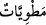
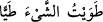
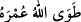
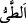
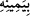

kadardır. Dolayısıyla burada O’nun azametine, kudretinin kemâline, o büyük gök
cisimlerinin O’nun kudretine nisbetle küçüklüğüne dikkat çekilmektedir. Yine avuç ile
kavramaya ne hakikaten ne mecâzen îtibar etmeksizin temsil ve hayalde canlandırma
yoluyla anlatılarak âlemi tahrip etmenin O’na göre ne kadar basit olduğu
gösterilmektedir. Nitekim el-İrşâd ve benzeri tefsirlerde de bu şekilde geçmektedir.
Âyetin devamı da aynı üslûb üzeredir:
“Gökler O’nun kudret eliyle dürülmüş olacaktır.”
“ kelimesinin dürme anlamındaki “ kökünden olduğu kabul
edilirse ‘dürülmüş/toplanmış’ demek olur. “ (Allah ömrünü bitirdi)”
ifâdesinde olduğu gibi ömrün geçmesi/tükenmesi anlamındaki “dan olduğu kabul
edilirse ‘helâk edilmiş/tükenmiş’ demek olur.
“ (sağ eliyle)” kuvvet ve iktidarı ile, demektir. Çünkü bu kelime ile muktedir
olmak mübâlağa ile ifâde edilir. Çünkü genelde sağ el sol elden daha güçlüdür. Nitekim
el-Es’iletü’l- müfhıme’de böyle geçmektedir.
İbn Abbâs (r.a.) der ki: “Yedi gök ile yedi yer Allah’ın kudret elindeki durumu,
birinizin elindeki hardal tanesi gibidir.”
Bâzı âlimler bu âyetin müteşâbih âyetlerden olduğunu, dolayısıyla te’vil ve tefsîrine
izin olmadığını, Allah Teâlâ’nın “İlimde yüksek pâyeye erişenler ise: Ona îman ettik;
hepsi Rabbimiz tarafındandır, derler.” (Âl-i İmrân, 3/7) buyurduğu gibi sadece ona
îman edilmesi gerektiğini söylemişlerdir.
Ehl-i hakîkat ise şöyle der: “Bu ‘kabza’ ile kahr, gazab ve bunların gerekleri, unsurlar
âlemi, onlardan terkib olunan ve meydana gelen varlıkların kendisine isnâd edildiği sol
elin (şimâl) kabzasıdır. Hz. Adem’in unsurlardan meydana gelen sûreti de bu
cümledendir. Rûhânî yönü ise sağ elin (yemîn) kabzasına izâfe edilmiştir. Sağ elin
(yemîn) göklerin ve yerin karşılığında zikredilmesi de buna delâlet eder. Şeyh-i Kebîr
(Sadreddin Konevî)’nin (k.s.) Şerhu’l-erbaîne hadîsen adlı eserinde geçtiği üzere Hz.
Peygamber (s.a.)’in Allah’ın Âdem (a.s.)’ı yarattığı “iki el”den birinin sol el (şimâl)
diye bahsettiği[142] bilinmektedir.[143]
Ebû Hüreyre (r.a.)’tan rivâyet edildiğine göre Rasûlullah (s.a.) şöyle buyurmuştur:
“Allah gökleri sağ eliyle (yemîn) yerleri de diğer eliyle tutar. Sonra onları sarsar ve
şöyle buyurur: “(Gerçek) hükümdar benim! Hani nerede o yeryüzünün
hükümdarları!”[144] Nitekim Keşfü’l-esrâr’da böyle geçmektedir. Bu rivâyette “diğer
el”e ‘sol el’ denebileceği ihsâs edilmektedir. Bu bakımdan bu hadîsteki ‘sol el’ ile
âyetteki ‘kabza’ aynıdır.
Eğer “Bu âyetle “Rabbimin her iki eli de mübârek birer yemîn (sağ el)dir.”[145]
hadîsi ve şâirin:
Eşit derecede iki sağ eli (yemîn) vardır O’nun sol eli (şimâl) yoktur!
O’nun yemînindedir hem eceller hem de rızıklar.